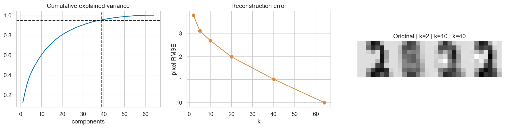

ML Hands-on Lab · 07 — Latent factor and decomposition
Principal component analysis
1. The decision and the mechanism
PCA compresses rows by keeping orthogonal directions with the most training-set variation. Choose a dimension budget, inspect the information that reconstruction loses, and remember that the largest variation need not be the most useful variation for a prediction task.
This lesson includes the mechanism, a hand-worked example, and the experiment design. The paired notebook contains the complete runnable setup and produces the diagnostic figure below.
2. Work a small example
A flattened 8 × 8 digit has 64 coordinates. Many pixels move together: nearby strokes brighten together and border pixels often stay dark. PCA finds combinations of pixel values that explain this covariance. Each principal component is a direction in feature space; its score is how far one row lies along that direction.
Projection and reconstruction by hand
Take centered points [−2,−4], [−1,−2], [0,0], [1,2], [2,4]. They lie exactly on y = 2x. The unit direction v = [1,2] / √5 keeps all their spread. For row [1,2], the score is [1,2] · v = √5. Reconstructing score × v returns [1,2]. The perpendicular direction [−2,1] / √5 has zero variance. Real data has perpendicular noise, so dropping that direction loses something.
3. The mathematics, with meanings
\[v_1=\arg\max_{\|v\|=1}\mathrm{Var}(Xv),\quad Z=XV_k,\quad \hat X=ZV_k^T\]
Here X is centered, or centered and scaled as in this notebook. The columns of Vk are k orthogonal principal directions. Z stores k scores per row. Multiplying back reconstructs the projection; then inverse scaling restores original pixel units. Eigenvalues measure the variance along each direction, so their normalized values give explained-variance ratios.
\[\mathrm{RMSE}_{reconstruction}=\sqrt{(nd)^{-1}\sum_{i,j}(X_{ij}-\hat X_{ij})^2}\]
Explained variance is a statement about the fitting distribution. Reconstruction RMSE checks how much error the chosen representation introduces on held-out rows. Neither is classification accuracy: a small low-variance signal could decide a label while explaining little overall spread.
4. Follow the actual experiment
- Load 1,797 real 8 × 8 handwritten digits. Keep labels only for stratification or display; PCA never uses them to fit directions.
- Reserve 25% of rows for test. Fit StandardScaler on training pixels only, then transform both partitions with the same means and scales.
- Fit a full PCA on scaled training rows. Find the smallest k whose cumulative training explained variance reaches 95%.
- Fit that k-component representation and reconstruct held-out digits. Compare error with a baseline that predicts the training mean image for every test row.
- Repeat reconstruction at k = 2, 5, 10, 20, 40, and 64. Display one digit at several budgets so the numerical tradeoff is visible.
5. Controls worth changing
| Control | What changing it does | What to inspect |
|---|---|---|
| Number of components k | More components keep more variation and storage; full rank reconstructs the scaled row up to numerical error. | Held-out reconstruction error and the visual information gained per added dimension. |
| Scaling | Standardization makes one pixel’s standard deviation comparable with another’s. | Low-variance pixels can receive more relative influence than with centering alone. |
| Variance target: 95% | A higher target keeps more fitting-distribution detail. | A downstream task may need fewer or different directions. |
| Outlier sensitivity | Large squared deviations can rotate directions toward unusual rows. | Reconstruction of ordinary held-out examples before and after contamination. |
6. Read the result and its limits
Read the cumulative-variance curve as training-set compression accounting, not predictive success. The reconstruction-error curve uses held-out images and should be compared with the mean-image baseline. In the reconstruction strip, look for which strokes appear as k grows rather than judging only smoothness: blur can lower squared error without preserving a useful class distinction.

The experiment fits both scaler and PCA on training rows, which matters: fitting either on all data would allow test-distribution information into the representation. PCA signs are arbitrary—flipping both a component and its scores does not change reconstruction. Components can also rotate within near-tied eigenspaces without a major change in the represented subspace.
7. Code that exposes the mechanism
This excerpt exposes the fit/transform boundary and the inverse transformations. The notebook’s X_train and X_test contain raw 0–16 pixel intensities.
scaler = StandardScaler().fit(X_train)
A = scaler.transform(X_train)
B = scaler.transform(X_test)
full = PCA(random_state=0).fit(A)
cumulative = np.cumsum(full.explained_variance_ratio_)
k95 = int(np.searchsorted(cumulative, 0.95) + 1)
pca = PCA(n_components=k95, random_state=0).fit(A)
compact = pca.transform(B)
reconstructed = scaler.inverse_transform(
pca.inverse_transform(compact)
)
mean_image = np.repeat(X_train.mean(0)[None, :], len(X_test), axis=0)
print("Retained dimensions:", k95)
print("PCA RMSE:", mean_squared_error(X_test, reconstructed) ** 0.5)
print("Mean-image RMSE:", mean_squared_error(X_test, mean_image) ** 0.5)The mean-image baseline has no per-example information. Beating it demonstrates useful reconstruction, while comparing k budgets reveals the marginal value of additional coordinates.
8. Break an assumption
The notebook corrupts eight training rows with very large random pixel values, then refits the scaler and PCA. Because covariance uses squared deviations, a few extremes can spend the component budget on directions that ordinary images do not need. Evaluate those new directions on the unchanged clean test set.
- Inspect error and reconstructions after contamination rather than assuming all extra variance is useful.
- Fit a centered-only PCA and compare it with standardized PCA. Explain which units each objective rewards.
- If you intend to use PCA before a classifier, choose k using a pipeline within validation. Selecting k from test classification accuracy would leak the final evaluation.
9. When to use it and what comes next
Use PCA for a linear compression baseline, correlated-feature exploration, and some denoising problems. Use UMAP or t-SNE when exploring local nonlinear neighbourhoods, while recognizing that those displays do not provide the same simple inverse reconstruction or global variance accounting. For outlier-heavy data, examine robust preprocessing or robust decomposition methods before trusting the leading components.